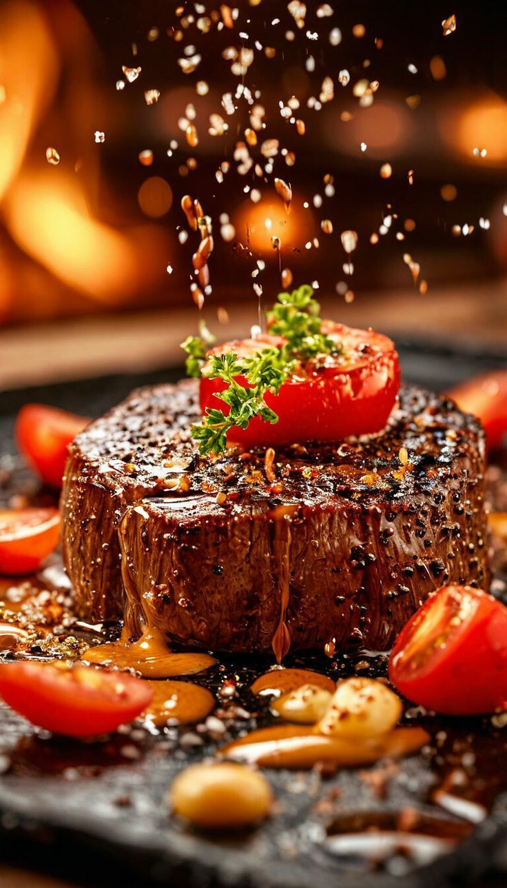
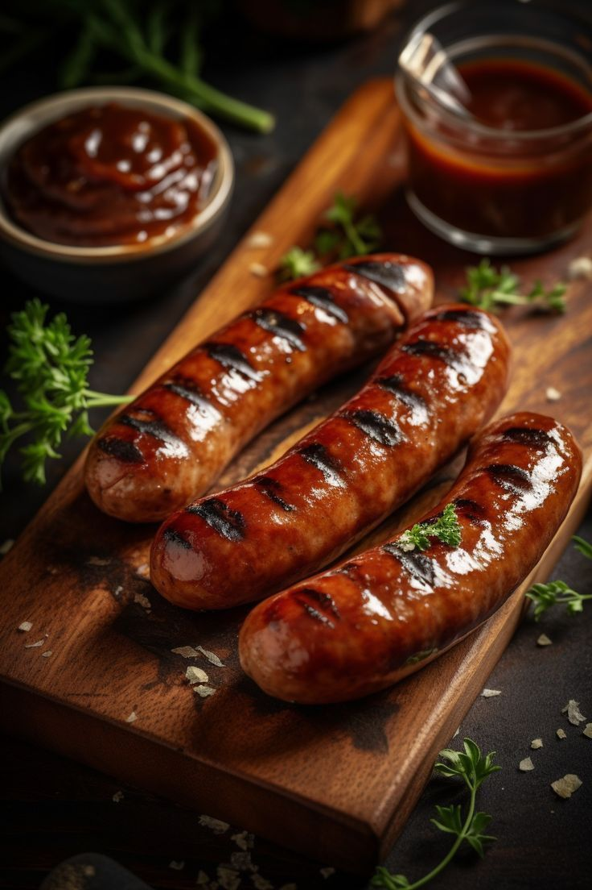
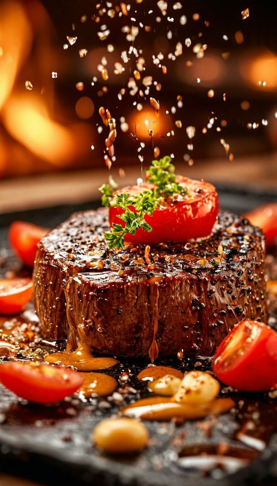
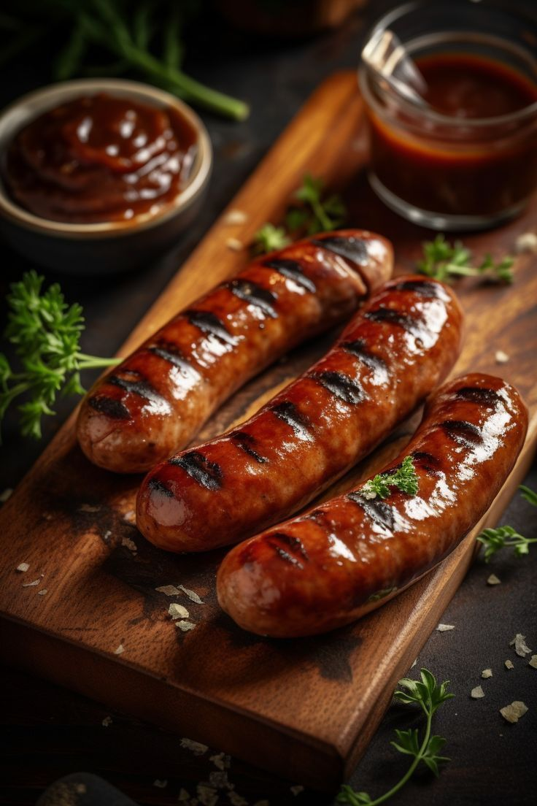

Steak de bœuf tendre
Viande rouge 100% locale, idéale pour vos grillades et repas familiaux.
Disponible dès 8h
Frais
500 g
Qualité, fraîcheur et goût exceptionnel à chaque bouchée 🍖
Découvrez notre sélection de viandes de qualité supérieure, directement du producteur à votre assiette. Fraîcheur, goût et traçabilité garantis pour tous vos repas.
Parcourir nos produits → 



Découvrez nos meilleurs morceaux de viande, frais et soigneusement sélectionnés pour vous.
Viande rouge 100% locale, idéale pour vos grillades et repas familiaux.
Poulet élevé en plein air, tendre et savoureux, parfait pour le rôti du dimanche.
Délicieusement parfumées, parfaites pour le barbecue ou les repas entre amis.
Du champ à votre assiette
Voyage des fermes locales
Du jardin à la cuisine
De l’élevage à votre assiette
Trajet depuis la mer
Lait et dérivés
Recherchez 2 millions de recettes en utilisant des mots-clés, 39 nutriments et 46 filtres de régime et de santé.
Recherchez 2 millions de recettes en utilisant des mots-clés, 39 nutriments et 46 filtres de régime et de santé.
Recherchez 2 millions de recettes en utilisant des mots-clés, 39 nutriments et 46 filtres de régime et de santé.
Recherchez 2 millions de recettes en utilisant des mots-clés, 39 nutriments et 46 filtres de régime et de santé.
Recherchez 2 millions de recettes en utilisant des mots-clés, 39 nutriments et 46 filtres de régime et de santé.